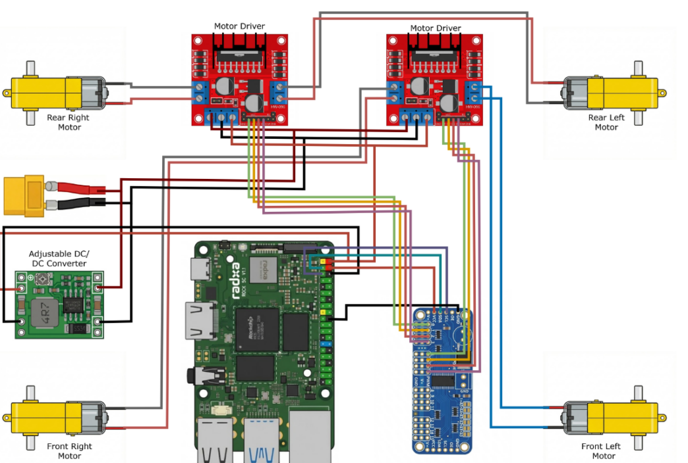
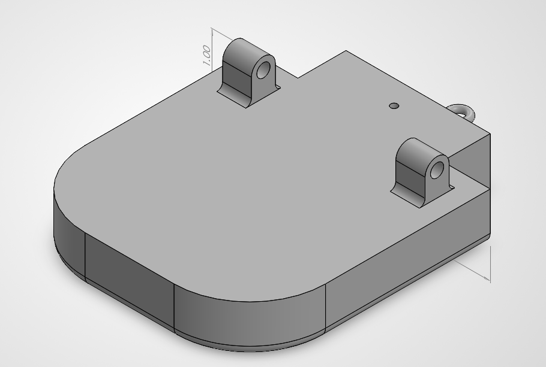
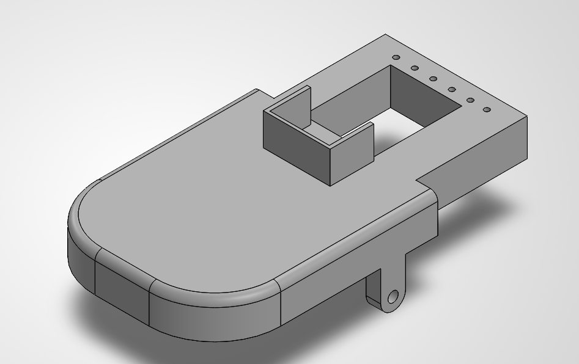

Computer Engineering · Florida Polytechnic University
Alexander Streck
I build hardware you can watch work: robots that follow a lane on their own, an arm that picks things up, and small embedded systems that react to the world around them.
B.S. Computer Engineering · May 2027
Florida Polytechnic University
Lakeland, FL
01Robotics · Computer vision
Autonomous Vision-Guided Car
Car driving the taped track on its own
A four-wheel robot car that follows a taped track using a camera instead of a remote control. A single-board computer processes the video and sends motor commands through a PWM board to two motor drivers.

Wiring: compute board, PWM board, motor drivers and power. Tap to enlarge.
Focus
Camera-based lane following, closed-loop steering
Compute
Radxa ROCK 5C single-board computer
Drive
Four DC gear motors on two motor drivers, commanded through a PWM board over I²C
Power
Battery through an XT60 lead, with a DC-DC converter for the computer
02Robotics · Manipulation
Robotic Arm
Arm reaching for and grabbing a target
A servo-driven arm on a wooden base, wired to a breadboard and controlled from a laptop. In the demo it lowers its gripper onto a rubber duck placed on a checkerboard pattern.
Focus
Multi-joint servo control, gripper actuation
Result
Arm picks up the target in a live demo
03Embedded · RFID
RFID Toll Gate
Tag scanned, gate arm lifts
A working model of an electronic toll lane. When an RFID tag reaches the reader, the microcontroller reads it and drives a servo that raises the gate arm.
Focus
RFID reading, tag validation, servo actuation
Hardware
Microcontroller, RFID reader, key fob tag, servo, breadboard
Result
Gate opens on a scanned tag
04Mechanical design · CAD
Solaris Mascot Beak

Lower beak with hinge lugs

Upper beak with cutout and mounting holes
I modeled the beak for Solaris, our school mascot, in SolidWorks. It is built as two parts, an upper and a lower beak, with rounded outer profiles and integrated mounting features so the pieces can attach and move.
Focus
Part modeling, mounting and hinge features, fit between parts